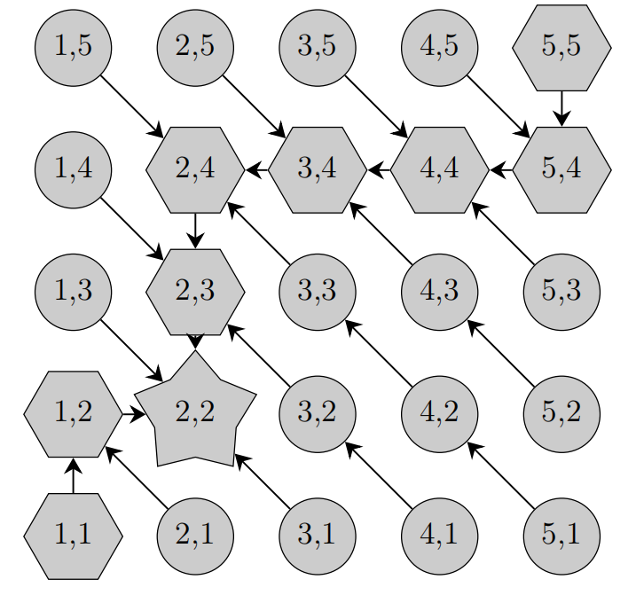
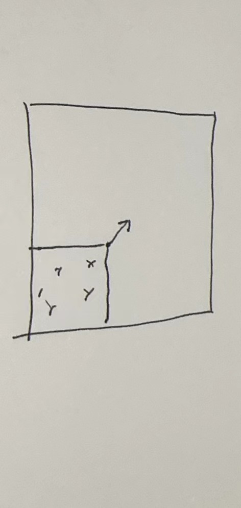
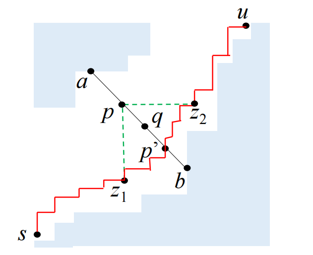
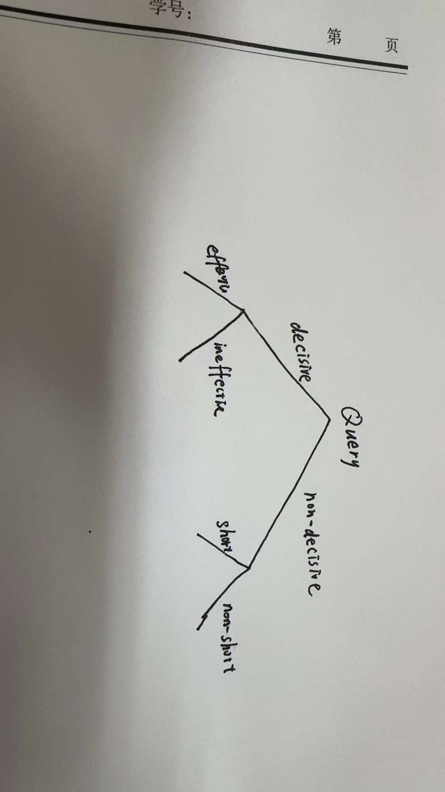
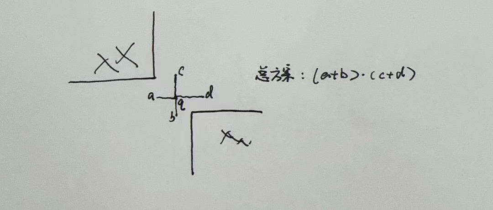
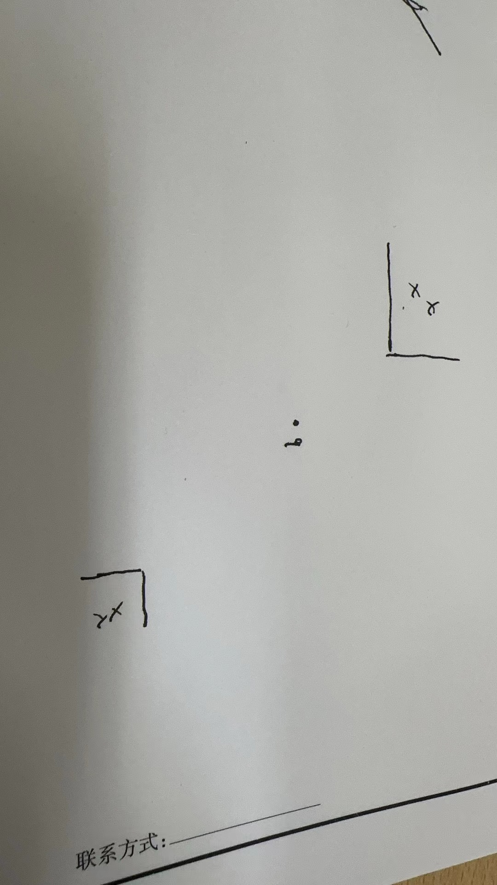

Tarski 复杂度下界
与主题无关的小命题
Tarski 不动点存在性
考虑\(f(1),f(f(1)),f(f(f(1)))....\)一直单增，直到一个不动的
寻找不动点上/下确界是NPC
感觉文章的证明有点问题，还得再想想。
如何证明一个问题的下界
这里以寻找单增序列上的某个值举例，我们来证明这个问题的复杂度下界是 \(O(\log n)\)
现在假设有人向我提问，每次询问这个序列的某个元素，但实际上这个序列并不存在，可以是我实时构造来使得对方要消耗最多的询问次数，并且要满足序列单调增的限制，因此如果我每次都返回一个使可行区间更大的数，那么可行解范围最多除以2，因此我可以控制他至少问\(\Omega(\log n)\)
也就是说，我们以被提问者的角度，找到一个方案，使得无论询问者如何询问，在符合问题条件限制下，我们都能回答超过\(\Omega\)次，所以这本质也是个构造问题. # 二维Tarski问题下界
构造
我们的函数最后都张这个样子：  （也就是有一条从最小元到最大元的路径）其它点指向它即可。 这样的函数一定是单调的，并且只有一个不动点。
这样，对于每次询问，如果我们回复左上或者右下，那么，我们就相当于排除了一块区域（后文将被排除的区域叫forbidden area）：

如果对于某个询问点，我们回复了左上或右下，那么这个询问我们把它叫做non-decisive query,如果反之（即它在路径上）它将被叫做decisive query。
接下来，我们先呈现一个方案——具体如何回复，然后再验证这个方案的正确性（即会保证询问次数大于\(\Omega(\log^2 n)\)）
具体方案
如果面对一个询问\(q(x,y)\),如果\((x-1,y+1),(x+1,y-1)\)都在
forbidden area，这表明此刻我必须做一个decisive query的回复（不然路径就断了），至于回复哪个方向，我们选择一个方向，使得回复后的可行的路径的条数最多即可。如果反之，一个询问\(q(x,y)\)没有被
forbidden area包夹，那么表明我们可以进行non-decisve query回复。但是具体回复哪个方向，我们要进行如下的分类讨论

如果两侧的forbidden area非常远
i.e. a,b横坐标差大于\(\sqrt{n}\),那么选择一个方向，使得回复后剩余可行的路径条数最多。（称为non-short query）
如果两侧 forbidden area 很近
i.e. a,b横坐标差不大于\(\sqrt{n}\)，那么我们回复一个与边界(a,b)更远的方向。(称为short query)
 ## 方案正确性证明 首先我们定义一个势函数\(L(t)\)表示第\(t\)次询问时，可行路径方案数的对数。因此\[L(1)=\log(\binom{2n}{n})=\log((2n)!)-2\log(n!)\] 由斯特林公式：\[\log(n!) \sim \frac{1}{2}\cdot \log n+n(\log n-1)\]
因此\[L(1) \sim \frac{1}{2}\cdot \log 2n+2n(\log 2n-1)-\log n -2n(\log n-1)\]
\[=\log2 \cdot n + o(n)\sim \Theta(n)\]
( 好像利用二项式展开再夹逼更简单
如果，我们遇到迫不得已回复decisive query
,我们选择a,b,c,d中的某一个回复，先选\(a+b\),\(c+d\)的较大者，再选里面的更大的，那么\(L(t+1)\geq \frac{1}{2}L(t)-1\)
如果可以回复一个non decisve query：
non-short query
 方案数变为原来的\(\frac{1}{2}(1-\frac{1}{\sqrt{n}})\geq \frac{1}{4}\),因此\(L(t+1)\geq L(t)-2\)
short query
假设两侧距离是\(d\),那么方案书变为原来的\(\frac{1}{2}(1-\frac{1}{d})\)那么\[L(t+1)\geq \log(\frac{1}{2}(1-\frac{1}{d}))+L(t)\sim L(t)-\frac{1}{d-1}\geq L(t)-d\]
因此\(L(t+1)\geq L(t)-\sqrt{n}\log n\)
综上，我们发现，\(L\)每次要么砍半，要么少一个\(o(n)\)阶的常数，因此下界至少是\(\Omega(\log n)\) 但是我们的目标是\(\Omega(\log^2 n)\),于是，接下来我们证明两件事：
- 如果对于一个
decisve query,如果其它decisve query和他距离都超过\(\sqrt{n}\),那么这个query被称为effective query。
如果总询问次数是\(O(\log^2
n)\),那么至少有\(\Omega(\log
n)\)个effective query
- 每个
effective query都能对应\(\Omega(\log n)\)个non-decisve query
1
注意到\(L\)一开始是\(n\),然后要么砍半，要么\(-\sqrt{n}\log n\),而且在\(\log^2(n)\)以内就衰减到1了，假设这\(\log^2 n\)次操作中有\(x\)次砍半，那么\(\log(n-x\sqrt{n}\log n)\leq x\)可以发现这个不等式的一个必要的解是\(x\geq \log(n)\)
2
原文是归纳的，这里先感性理解一下，左上右下的边界最多是一半一半砍的，砍出一个decisve query肯定要\(\log(n)\)次